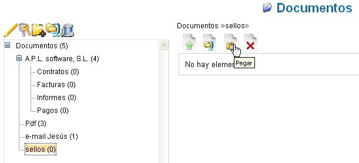

Visualizar Carpeta |
LogicalDOC guarda los documentos en carpetas. La idea de
fondo es similar a lo que se hace con un disco físico local.
Seleccionando una carpeta en la parte izquierda de la pantalla se
muestran los documentos que contiene. Una carpeta puede contener
documentos y subcarpetas.
En la parte superior se visualizan los controles generales.
Clasificados de izquierda a derecha: Crear documento, Importar archivo
zip, Cortar y Borrar.
En la parte inferior se muestran los documentos que
contiene la carpeta seleccionada.
A cada documento se le asocia un menú emergente que se
activa posicionando el ratón sobre el icono de opciones.
Borrar los documentos
La función de borrado es muy simple y rápida.
Es necesario destacar que, si se desea, se puede borrar usando la
caja de selección a de la izquierda del Nombre del documento.
En este punto haz click sobre el icono Borrar. El sistema
requerirá de una confirmación de seguridad,
selecciona "OK" para proceder al borrado.
| Los
documentos borrados no son recuperables ni por los
usuarios ni por el Administrador. Durante el borrado, el sistema elimina toda la información y los ficheros asociados con el documento a eliminar. |
|
Cortar y pegar
Esta funcionalidad consiste en transportar los
documentos desde una carpeta a otra interna del sistema, sin tener que
descargar y reimportar.
La operatividad reemprende los conceptos enunciados por la
"Cancelación de documentos".
La operación se realiza en 4 pasos:
- primero, marcar en una carpeta los documentos que se desea "Cortar"
- hacer click sobre el icono cortar (tras haber hecho click, el icono cambia a Pegar)
- posicionarse sobre la carpeta destinataria navegando en el árbol de carpetas a la izquierda (la carpeta seleccionada se resalta en negrita)
- Pegar los documentos en la carpeta haciendo click en el icono "Pegar".
2. sobresaltado el icono Cortar

4. sobresaltado el icono Pegar